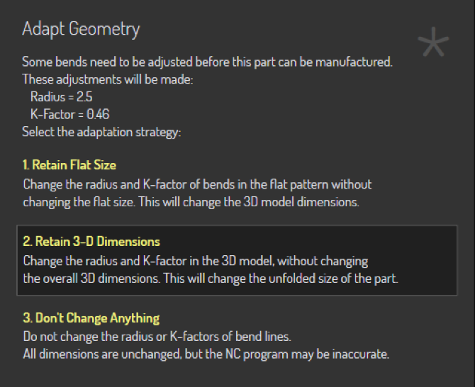

O recurso Adaptar Geometria
Este documento explica as três opções de processo diferentes disponíveis com o recurso Adaptar Geometria:

A função Adaptar Geometria é acionada quando a peça de entrada não corresponde às condições reais do processo. Um ou ambos os problemas a seguir podem existir na peça:
-
O raio interno das dobras pode ser muito pequeno. Cada processo (como dobra em painel ou dobra a ar em prensa dobradeira) terá um raio interno mínimo possível para esse processo. Se o raio de projeto da peça for menor que isso, a peça não poderá ser fabricada conforme projetada; o raio precisará ser alterado.
-
O K-factor da linha de dobra pode estar incorreto. A máquina de processo (dobradeira de painel vs prensa dobradeira) e as ferramentas ou condições do processo (punção/matriz/lâmina de dobra/espaço de ar) todos se combinam para determinar qual será o K-factor real da dobra. A dobra pode ser projetada com um K-factor diferente.[1]
Vamos pegar uma peça 2-D simples que tenha tanto um raio incorreto quanto um K-factor incorreto, e ver como a função Adaptar Geometria modifica esta peça.

A peça 2D de entrada é mostrada acima - é um retângulo simples com uma linha de dobra exatamente no meio. A largura da peça é 96,75 mm. A espessura do material é 2,5mm.
A linha de dobra foi projetada com um raio interno de 0,5 e um K-factor de 0,5. A largura plana (comprimento da linha neutra) é, portanto:
ângulo * (raioInterno + kFactor * espessura) = PI/2 * (0,5 + 0,5 * 2,5) = 2,75 mm
Como esta é uma dobra de 90 graus, a dedução de dobra é simplesmente:
2 * espessura - larguraPlana = 2 * 3 - 2,75 = 3,25 mm
Não Alterar Nada
Quando dobrada sem qualquer processamento de Adaptar Geometria, isso cria uma peça com estas dimensões:

Este também é exatamente o resultado que obtemos com a opção Não Alterar Nada. Nem o K-factor nem o raio foram alterados, resultando em uma peça 3D que corresponde exatamente à intenção de projeto do desenho 2D. Se isso for definido para fabricação, a peça fabricada resultante não corresponderá realmente a essas dimensões, principalmente porque a dobra produzida na máquina variará tanto em raio quanto em K-factor efetivo em relação à dobra que foi projetada. Neste caso, você acabará com uma peça um pouco menor que 50x50 após a fabricação.
Manter Tamanho Plano
Se esta opção for escolhida, o TecZone manterá o tamanho do plano inalterado, mas anotará as linhas de dobra com o raio de dobra e K-factor corretos. Vamos supor que o raio de dobra correto seja 2,5mm e o K-Factor seja 0,46 mm. A peça agora seria primeiro alterada internamente para isto:

Observe como o tamanho geral da peça está inalterado (ainda 96,75 mm) e a posição da linha de dobra está inalterada. No entanto, a dobra agora tem raio 2,5 e K-factor 0,46, o que significa que a largura plana da dobra aumentou para 5,73. Isso agora é dobrado para resultar no seguinte:

Como você pode ver, a dimensão 2D da peça está inalterada, mas a dimensão 3-D mudou para 50,51 x 50,51 (da dimensão de projeto inicial de 50 x 50).
Manter Dimensão 3-D
Se esta opção for escolhida, a dimensão 3D da peça permanece inalterada, mas como os raios de dobra e K-factors são alterados, a peça desdobrada mudará. Ao começar com um plano 2-D (como neste exemplo), o TecZone segue as seguintes etapas.
-
Dobrar o modelo para 3D, usando a intenção de projeto inicial de raio e K-Factor. Isso resultará em um modelo 3D que parece idêntico ao da Figura 2.
-
Agora, alterar o raio para o raio alvo de 2,5mm e o K-factor para o alvo de 0,46. Isso resultará em um modelo 3D como o abaixo:

-
Este modelo é então desdobrado (usando um K-factor de 0,46 para a dobra) para resultar no seguinte plano:

Com esta opção, a dimensão 3D é mantida na dimensão de projeto de 50x50. A largura da peça desdobrada mudou de 96,75 para 95,73 mm.
Summary
-
If the flat has not yet been produced, the best option is typically Retain 3-D Dimension
-
If the flat has been produced and cannot be modified, the best option is Retain Flat Size
Both these options will result in parts where the final manufactured result should match the 3D data as seen in the TecZone window. In contrast, the Don’t Change Anything option will result in a final manufactured part that will not match the 3D data seen in TecZone, since the actual bend radii and K-factors are not modeled correctly in the design.